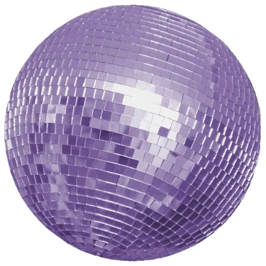
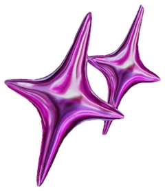
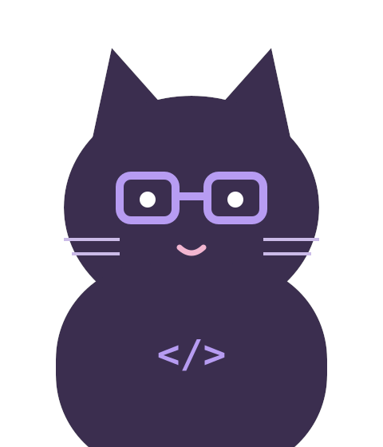
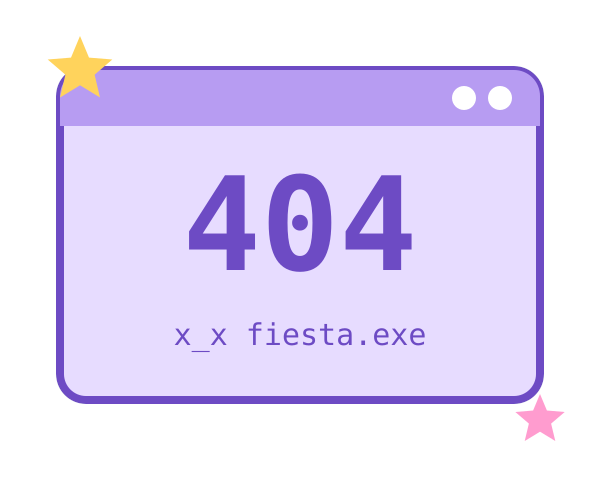
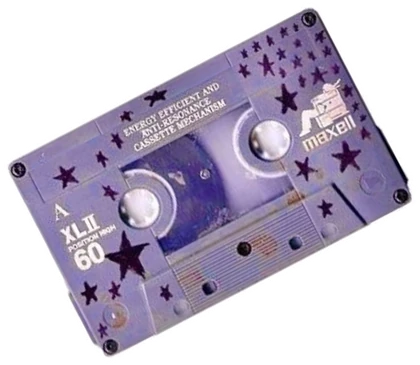
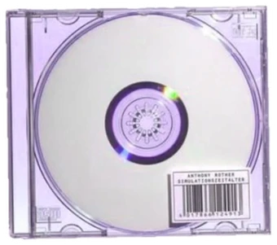

$ npm install fiesta
compilando la fiesta…
✔ 0 errors, 3 warnings
▶ TOCÁ PARA CONTINUAR
✦ NUEVO LOGRO DESBLOQUEADO ✦
¡Te invito a festejarlo conmigo! 🥂

// yo leyendo mi primer error de compilaciónDespués de años de café, bugs a las 3am y commits de madrugada… ¡lo logré! 💜
▼ DESLIZÁ ▼📋 DATOS DE LA FIESTA

Error 404: sobriedad not found🎵 SOUNDTRACK
Sumá los temas que no pueden faltar en el festejo.


Muy pronto vas a poder sumar tus temas desde acá.
💌 TU LUGAR TE ESPERA